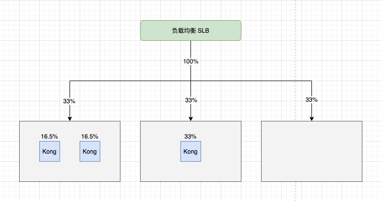
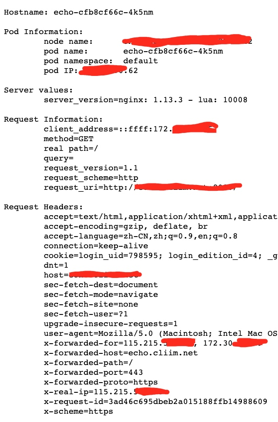
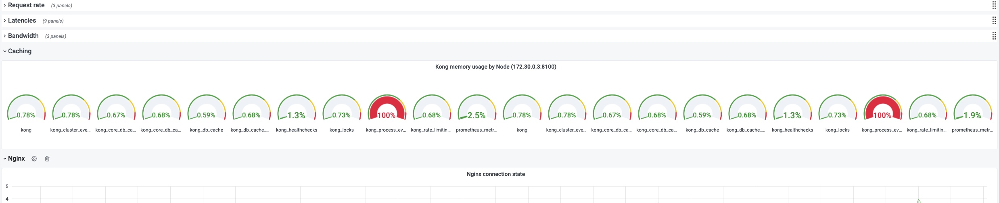
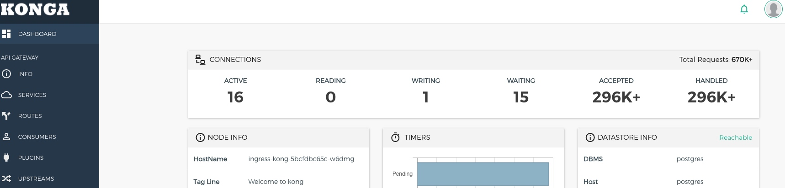
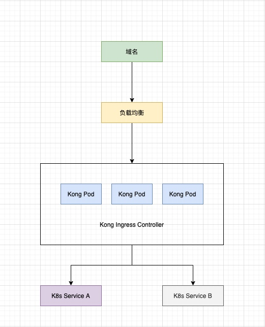
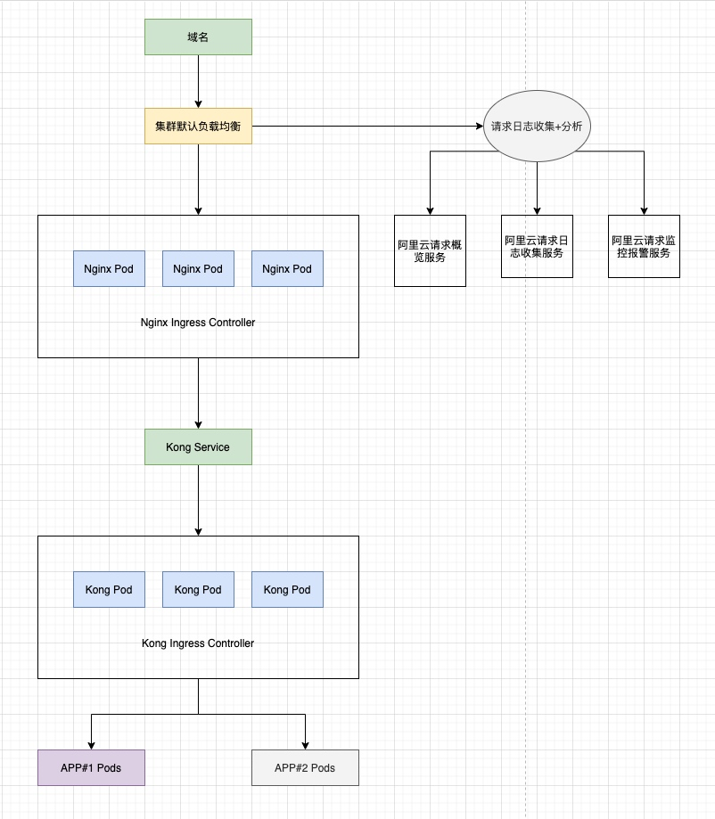
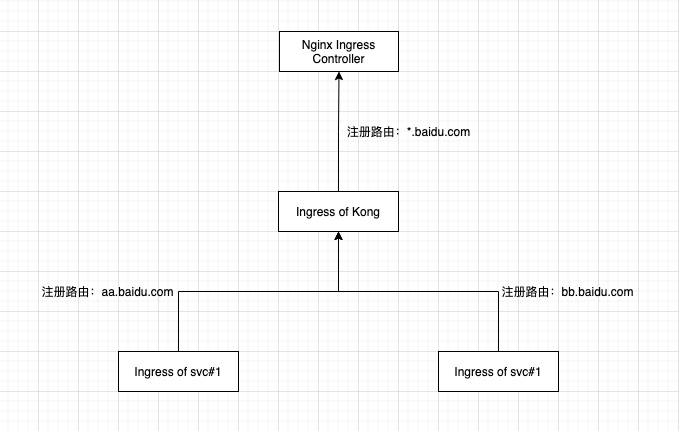

Kong API Gateway 落地 Kubernetes 实践（六）：保留客户端 IP
框架已经搭好，接下来就是对号入座了，在过程中，我们遇到了一些细碎的问题，如果不注意的话可能会采坑。
网关传递源 IP
这个问题其实分两方面，一方面当然是 Kong 传递源 IP，另一方面是 Kubernetes 转发流量到 Pods 时保留源 IP。
这里我们假设链路是，
请求 --> 负载均衡 --> 集群节点 --> Kong 网关实例 --> Pod
之前我们说过，我们的 Kong 是接在阿里云默认 nginx-ingress-controller 之后的，但这里我们为了简化，直接把涉及这方面的去掉了。
Kubernetes 保留客户端源 IP 的策略
参考文档:
K8s 官方文档：保留客户端源 IP。
service.spec.externalTrafficPolicy - 表示此服务是否希望将外部流量路由到节点本地或集群范围的端点。 有两个可用选项：Cluster（默认）和 Local。 Cluster 隐藏了客户端源 IP，可能导致第二跳到另一个节点，但具有良好的整体负载分布。 Local 保留客户端源 IP 并避免 LoadBalancer 和 NodePort 类型服务的第二跳， 但存在潜在的不均衡流量传播风险。
阿里云文档: 容器服务中多个SLB负载均衡并透传源 IP。
总结下来，如果要保留源 IP，那么我们就要选择 Local。但是有一点要注意的是，外部请求经过公网 IP 的负载均衡到达集群节点。
注意：负载均衡将请求负载到节点的方式，是由云厂商决定的。以阿里云为例，负载均衡支持后端是一个虚拟服务器组，该组包含了 K8s 集群中所有的普通节点，如果集群出现节点的扩缩，该组能及时同步。

如上图所示，负载均衡会均分流量到各个普通节点，单个节点上的 Kong Pod 会均分节点流量，从整体上看，会出现 Kong Pod 接收流量不均的问题，更为严重的是，上图最右边的节点上没有 Kong Pod 实例，那么这节点上的流量都会异常。这个就是前面所说的负载不均问题。
Kubernetes 保留客户端源 IP 的实际解决方案
沿着之前的分析，我们暂时不能要求阿里云负载均衡只负载到那些部署了 Kong Pod 实例的节点上，那么我们只能要求每个普通节点上都有 Kong Pod 实例，且为了避免负载不均，每个节点上只能由一个 Kong Pod 实例。
总结：每个普通节点上要求一个 Kong Pod 实例。
方案一：以 DaemonSet 方式部署 Kong 网关。
方案二：以 Deployment 方式部署 Kong 网关，Pod 与 Pod 之间反亲和，数量与节点一致。
这里我们选择了方案二，主要是考虑兼容原来的部署，如果没有历史包袱的话，选择方案一也是可以的。
反亲和性配置
affinity:
podAntiAffinity:
requiredDuringSchedulingIgnoredDuringExecution:
- podAffinityTerm:
labelSelector:
matchExpressions:
- key: app
operator: In
values: ingress-kong
-
topologyKey: kubernetes.io/hostname
Kong 保留源 IP
此时我们保证带有源 IP 信息的请求到达了 Kong Pod 实例，接下来就要看 Kong Pod 将请求转发到后端实例时，能否夹带源 IP 信息。
Kong 官方文档：Preserving Client IP Address。
Kong 论坛讨论：Kong Nation How to Forward Client’s request IP。
例如我修改的配置为：
- name: KONG_TRUSTED_IPS
value: 0.0.0.0/0,::/0
- name: KONG_REAL_IP_HEADER
value: X-Forwarded-For
验收结果
我们在 K8s 集群部署 echo 服务，并配置路由将其暴露出来。

我们看到经过网关的时候，会在 x-forwarded-for header 上记录转发网关的地址，然后从 x-real-ip header 上可以找到客户端 IP。
总结
请求在 网关 + K8s 架构中，可以会有多次中转，因此在实现 “保留客户端 IP 这个功能” 时，要确认每次中转时都不要丢失客户端 IP 信息。如果能对整套架构链路有清晰的认识，那么实现该功能就会水到渠成。


Kong API Gateway 落地 Kubernetes 实践（三）：自定义插件
经过上一篇，加上自己尝试的话，基本上会对 Kong 插件的使用方式有个印象了。接下来，我们来说说自定义插件。
当现成的插件满足不了我们的需求，我们就要实现自己的插件，然后借这个机会，把整个自定义插件的开发，发布流程记录下。
资料
首先是基础的 Plugin Development Guide 和 Plugin Development Kit，这两篇只是给了我们插件内部实现的文档。接着强烈推荐 Setting up custom plugin in Kubernetes environment，这篇特别适合不熟悉 lua 的开发者，其中也给了一个非常好的 demo 。
新插件代码
插件需求：我尝试使用 Kong Proxy Cache（请求缓存插件）后发现产生了一个疑问：缓存的命中率如何？
从监控上，我能看到所有请求的统计情况，但是我看不出有多少请求是命中了缓存的，可能是那些时延比较低的请求，但是不够精确和量化。我就想如果能在监控信息中夹带是否命中的数据，那么在监控展示时，根据这个数据过滤，然后就能得到准确的命中率了。
插件实现思路：观察 Kong grafana 监控，我们注意到请求的监控数据条目是 kong_http_status。直接的想法是，要是在这个 Prometheus 条目上增加名为 “cache” 的 tag 就好了。
然后我们顺着这个想法找到 Prometheus Plugin 源码，修改源码，详见：https://github.com/yuyulei/blog-codes/tree/master/kong-plugins/caoliao-prometheus。
我们主要改动的地方有：
- 修改 plugin 的命名，一定要跟原来不一样。
// in handler.lua file
-- local prometheus = require "kong.plugins.prometheus.exporter"
local prometheus = require "kong.plugins.caoliao-prometheus.exporter"
- 增加自定义 tag： cache。
metrics.status = prometheus:counter("http_status",
"HTTP status codes per service/route in Kong",
-- {"service", "route", "code"})
{"service", "route", "code", "cache"})
labels_table[4] = "Unknown"
if message.response.headers["x-cache-status"] then
labels_table[4] = message.response.headers["x-cache-status"]
end
我们在这里需要注意的是：插件的执行顺序。根据我们的需求，监控插件需要判断出哪些请求命中了缓存，哪些没有命中，所以必须安排在缓存插件之后执行。
简单解释下 HTTP header： x-cache-status。该 header 是经过缓存插件后附加到 response Header 上。其中取值有：Hit（命中），Miss（未命中），Bypass(不考虑缓存)，Refresh(缓存超时)。我们不在乎具体取值是什么，如果发现 header 中有 “x-cache-status” ，就在该请求的监控条目中设置 cache tag。
集成新插件
我们接下来需要将新插件集成到 Kong 网关中。我觉得，在 Kong Ingress Controller（K8s 集群）环境下集成插件比原生 Kong 环境更方便。
先将代码以 configMap 的形式录入到 K8s 集群，
kubectl create cm kong-plugin-caoliao-prometheus --from-file=caoliao-prometheus -n kong
然后修改 KIC deployment，
- env:
- name: KONG_PLUGINS
value: bundled,caoliao-prometheus
- name: KONG_LUA_PACKAGE_PATH
value: /opt/?.lua;;
volumeMounts:
- mountPath: /opt/kong/plugins/caoliao-prometheus
name: kong-plugin-caoliao-prometheus
volumes:
- configMap:
name: kong-plugin-caoliao-prometheus
name: kong-plugin-caoliao-prometheus
如上如升级网关即可。
监控展示
设计 3 条 Metrics Query，分别是命中缓存的请求 RPS，总请求 RPS 以及命中率。
总结
我们通过小小修改了 Kong Prometheus Plugin 源码，走完了自定义插件从开发到集成发布的全过程。Kong 的很多插件，我们都是可以找到源码的，如果是和我一样不熟悉 lua 的开发者，我建议优先考虑在源码的基础上改进，而不要自己造轮子。
另外，Kong 还支持 golang 插件，有机会我也想尝试下。
Kong API Gateway 落地 Kubernetes 实践（二）：可用插件与监控采集
我们这里借这个监控插件（prometheus）来展示 Kong Gateway 是如何配置插件的。
关于监控采集，默认 Kong 暴露的 metrics 接口是 :8100/metrics，包括一些基本数据监控，更为细粒度的监控数据（比如 Routes，Services, HTTTP code 等）就需要监控插件：Prometheus Plugin。
另外，Kong 还有官方 Grafana dashboard 模板，只要适配好监控源，完全可以实现一键搭建监控图，详见：https://grafana.com/grafana/dashboards/7424。
准备
在谈监控前，我们首先要完善 Prometheus（这个 Prometheus 不是指插件，而是监控采集工具），我这里是直接使用阿里云的监控采集，省去了 Prometheus 的安装以及数据存储问题。
如果是自己动手部署话，就需要通过 Kong Service 地址 + 监控 Port 的形式准确采集即可。成功的话，大概会和下图一样：

只有 Kong 自身的监控数据，并不涉及请求相关的。
一般插件的适配
首先，官方提供了一定的功能插件，详见：https://docs.konghq.com/hub/，然后我们也可以在官方文档找到 “通过 K8s 自定义资源适配 Kong 各种插件的” 方式，详见：https://docs.konghq.com/kubernetes-ingress-controller/1.1.x/concepts/custom-resources/。
但是我不推荐。
不推荐的理由是，上述自定义资源，就像一个桥梁连接了插件和对应的路由（Kong Routes）和服务（Kong Services）。这些都存在 K8s 数据信息中心，但是接下来，你一旦修改插件的参数，而这个修改是不会计入到 K8s 资源中去的，等到 Kong 重启后，插件的信息就会恢复到一开始的样子。
所以我推荐通过 Admin API 操作插件。
Admin API 操作插件
通过 Konga UI，我们可以很方便的启用插件，注意插件也是分全局插件和针对性的插件，下午我们直接创建了一个全局的 Prometheus Plugin。

然后在去查看 Grafana 监控，就可以看到请求相关的监控了。

其他插件的操作
Kong 提供了很多免费的插件，几乎都可以在 konga UI 上直接操作，例如 Rate Limiting 等。但是，我发现在操作 Proxy Cache Plugin 时，konga 无法将一些参数有效地传递给 Kong，如果出现了这种情况，我们就不得不使用 Kong 自定义资源了，每次修改都需要删除老的定义，新建新的定义。
另外，我们也可以自行开发插件，同样也可以在 konga 上操作。
总结
官方推荐使用 Kong Custom Resources 的形式适配插件，但是不支持修改，所以我推荐通过 konga + Kong Admin API 的方式，既减轻了我们理解的负担，也方便具体操作。
上述不足的地方在于，konga 存在一些 bug，不能正确解析某些 Plugin 字段，那么这时候我们还是要靠 Kong Custom Resources 的形式。
免费插件有很多，我们就不一一介绍了，之后我们也会提供自定义插件的例子。
Kong API Gateway 落地 Kubernetes 实践（零）：启程
背景
其实在开始将 Kong 之前，我们不能不先回答两个问题是：1. 为什么要有 API Gateway ？2. 为什么选 Kong 作为网关 ？
第一个问题直接略过。简单回答下第二个问题。
面对这问题的时候，其实是一个技术选型的问题，因此我们作为普通开发人员，一般从以下几个方面去平衡，去选择：
- 技术栈：除了网关本身的实现，也要考虑与自身业务的技术对接。
- 费用：开源或收费。
- 成熟：是否经受生产环境验证，是否被光大用户验证。
- 部署/运维成本：与云原生（Kubernetes）的兼容性。
- 功能/插件/中间件：网关功能是否丰富，是否有丰富的插件库，是否方便添加自定义插件/中间件。
- 接受水平：开发人员的接受能力，能力越强，那么对 API Gateway 要求就可以放低，反之亦然。
其中 JAVA 系不需要考虑上面，考虑就是 Spring 全家桶。然后，我后来也问过阿里云的技术支持，他们告诉我，他们的企业用户主要以Kong和tyk为主。
然后我说下选择的原因。我所处的环境是 nginx + php 的技术栈，对 nginx 和 lua 有倾向性，然后周围的同事觉得平时接触过，就觉得能驾驭 Kong，因此相中了 Kong。
布局
API Gateway 的加入或者调整往往伴随着业务技术架构的变化，而我也面临 SLB(负载均衡) + AliyunECS(nginx+php) 转型到 SLB + Kubernetes 的变迁。


另外我们还要考虑如何从 ECS 架构平滑地迁移到 Kubernetes 架构，以及业务 APP 和网关 Kong API Gateway 如何落地的问题。
Kong API Gateway 落地 Kubernetes 实践（一）：部署
准备工作：
- 了解 Kong Gateway（社区版）。
- 阿里云 Kubernetes 集群。
- KIC（Kong Ingress Controller) 官方指导文档：https://docs.konghq.com/kubernetes-ingress-controller/1.1.x/guides/getting-started/。
相关代码见：https://github.com/yuyulei/blog-codes
部署
部署组件
- Kong Ingress Controller（包括 Kong Gateway 和 controller）
- 来源：Get started 和 yaml 文件。
- Konga（免费的 UI 界面）
- 来源：github konga。
- DB 模式
前两点，按照说明文档安装即可，第三点我们简单说明一下。
普通场景下，我们通过 Kong Admin API 操作 Kong 中的各种内部资源（Services，Routes，Upstreams，Targets，Plugins 等），然后保存在数据库里的（方便多个 Kong 实例共享数据）。但是在云原生环境中，Kong Ingress Controller 尝试将 K8s 里的资源概念转化为 Kong 的内部资源，比如说将 K8s 的 Pods 转化为 Kong 的 Targets。换言之，在普通场景下，Kong 中的内部资源来源自 Admin API 调用，而云原生场景下，来源自 K8s 资源对象。两种来源实际上 Kong Ingress Controller 都支持，但是为了避免冲突，官方推荐使用 DBLess 模式，也就是推荐所有内部对象均来源自 K8s 资源，某种程度上也简化了部署。
但在生产使用中发现，DBLess 模式带来了一些弊端：
- 无法通过 Admin API 对 Kong 执行所有的写请求相关的操作（因为无数据库保存，只能保存在内存中，一旦重启就丢数据）。
- Kong 实例间无法共享配置信息，限流限速数据，甚至缓存内容。因此最终的结论是
为了避免操作冲突，达成操作共识：
- 开启 DB 模式
- Kong 中的 Routes，Services，Upstream，Targets 完全交于数据由 Controller 同步。
- Kong 中的 Plugins 数据完全由 AdminAPI（也就是 konga 界面操作而来）操作。
部署细节
KIC（Kong Ingress Controller）
主要 yaml 文件参考对应 github repo 里的链接，做以下几处修改：
#1
- name: KONG_ADMIN_LISTEN
value: '0.0.0.0:8001, 127.0.0.1:8444 ssl'
#2
- name: KONG_DATABASE
value: postgres
- name: KONG_PG_HOST
value: postgres
- name: KONG_PG_USER
value: kong
- name: KONG_PG_PASSWORD
value: kong
第一点是开放 HTTP Admin 接口给 konga，第二点是依赖的 DB，注意这里 DB Host 填 postgres，是依赖了 K8s service DNS 方式。如果是外部的 DB，可能要将地址填完整。
另外，修改 Service kong-proxy 的端口，增加 Admin 端口和监控采集端口，如下
- name: admin
port: 8001
protocol: TCP
targetPort: 8001
- name: monitor
port: 8100
protocol: TCP
targetPort: 8100
selector:
app: ingress-kong
type: LoadBalancer
LoadBalancer 类型的 Service 会由云厂商的具体实现，像阿里云的话会自动生成一个与之匹配的负载均衡。
konga
主要 yaml 文件来自 github konga，但是我们为其增加了一个指定到数据库，如下
env:
- name: DB_ADAPTER
value: postgres
- name: DB_HOST
value: postgres
- name: DB_PORT
value: "5432"
- name: DB_USER
value: kong
- name: DB_PASSWORD
value: kong
- name: DB_DATABASE
value: konga
- name: DB_PG_SCHEMA
value: konga
因为 konga 数据量很小，我们简单与 Kong 共享一个数据库。
DB
我们强烈推荐 Postgres，简单点的话可以用 K8s EmptyDir 作为数据挂载点，但是生产的话可以以实际的盘作为挂载点。
初步部署
等待上面三组件部署完成，我们应该可以直接访问 konga 界面。
如果有公网域名，我们可以将公网域名指到负载均衡 SLB 访问，还需要为 konga 向 Kong 注册一个路由（ingress 方式）。
如果没有公网域名，我们可以将 konga Pod/Service 端口暴露出来，例如
kubectl port-forward pod/konga-bdddd476b-ms2rw 8337:1337 -nkong
浏览器访问 localhost:8337

回到阿里云
现方案链路如下

上面的方式是没有问题的，但是我们是利用阿里云提供的请求概览，请求日志分析等功能，我们选在把 Kong 网关接在集群默认 Nginx Ingress Controller 之后（阿里云中的 K8s 集群会默认自带一个 Nginx Ingress Controller）。

我们把 Kong 作为一个特殊的服务，承载所有业务请求，然后 Kong 实例根据保存的路由关系，选择将请求转发到对应方后端实例上。通过阿里云默认负载均衡对所有请求加以分析和统计。
下面是请求概览的展示，十分适合业务开发人员的查阅。

调整细节
为了达到上述的效果，我们需要做以下调整。
- 准备 Kong Service，并对应到 Kong Pods。
- 创建 Kong 对应的 Ingress，注册路由到 Nginx Ingress Controller 下。
- 创建所有业务应用对应的 Ingress, 注册路由到 Kong Ingress Controller 下。
apiVersion: extensions/v1beta1
kind: Ingress
metadata:
annotations:
kubernetes.io/ingress.class: nginx
name: kong-proxy
namespace: kong
spec:
rules:
- host: '*'
http:
paths:
- backend:
serviceName: kong-proxy
servicePort: 80
...
kong-proxy 是 Kong 网关对应的 K8s Service。
通过 kubernetes.io/ingress.class: nginx，将 Kong Service（kong-proxy）支持的路由规则，注册到 Nginx Ingress Controller 之下。
同理，具体某个服务的路由规则通过 K8s Ingress 和 kubernetes.io/ingress.class: kong 注册到 Kong Ingress Controller 之下。
一环扣一环，将整个链路连起来。但我们注册路由规则时注意，前者注册 NIC 时可以使用通配符，后者注册 KIC 时可以细化，如下

总结
通过简单部署，将整个链路走通，然后选择适配云厂商提供的服务，进行链路调整，最终形成最后的链路形态。
Copyright © 2015 Powered by MWeb, Theme used GitHub CSS.